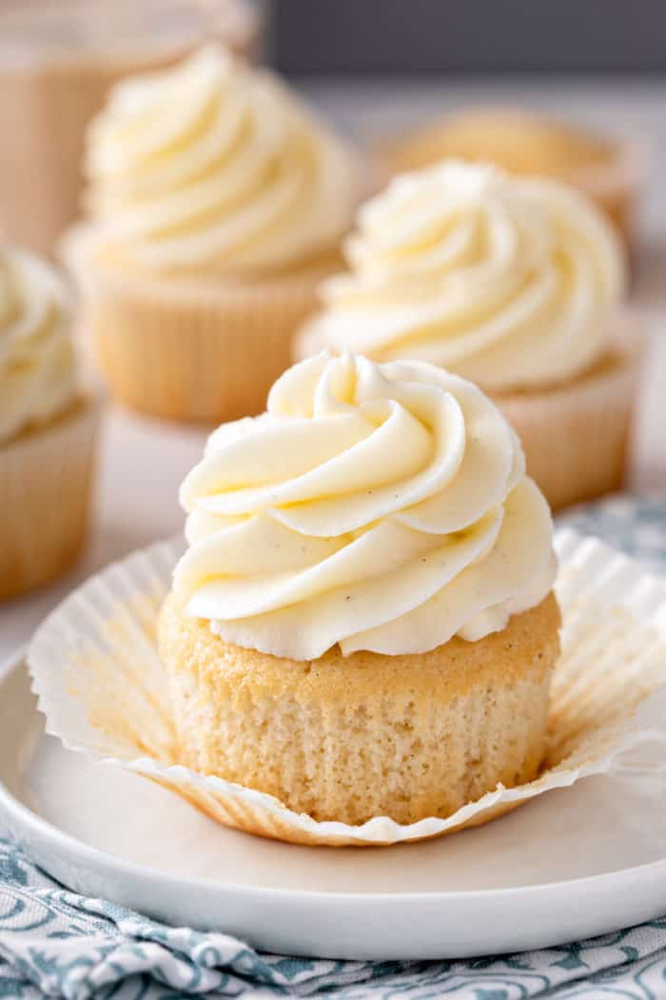

Vanilla Cupcake Recipe

Description
A cupcake (AmE, CanE), fairy cake (BrE), or bun (IrE) is a small cake designed to serve one person, which may be baked in a small thin paper or aluminum cup. As with larger cakes, frosting, icing and various other cake decorations such as fruit and candy may be applied.
Ingredients
-
¾ cup superfine sugar
-
⅔ cup butter, softened
-
3 large eggs
-
1 ½ cups self-rising flour
-
1 teaspoon vanilla extract
Steps
-
Gather all ingredients. Preheat the oven to 350 degrees F (175 degrees C). Grease a 12-cup muffin tin or line cups with paper liners.
-
Beat sugar and butter together in a large bowl with an electric mixer until light and fluffy. Add eggs one at a time, beating well after each addition.
-
Beat in vanilla extract. Stir in flour just until mixed; spoon batter into the prepared muffin cups, filling each 3/4 full.
-
Bake in the preheated oven until the tops spring back when lightly pressed, 18 to 20 minutes. Cool in the tin briefly before transferring to a wire rack to cool completely.
Home